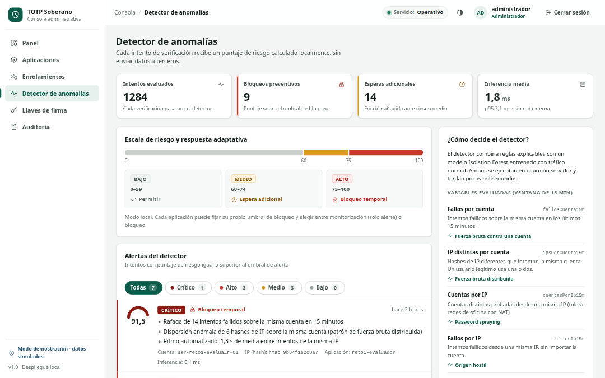
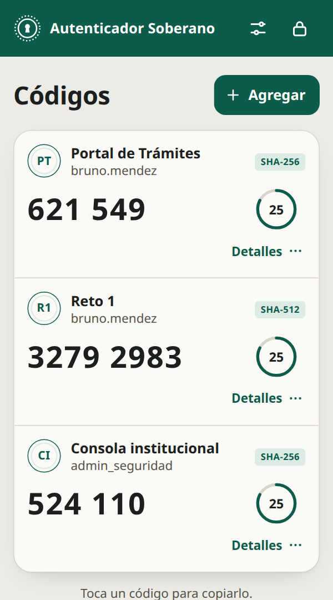
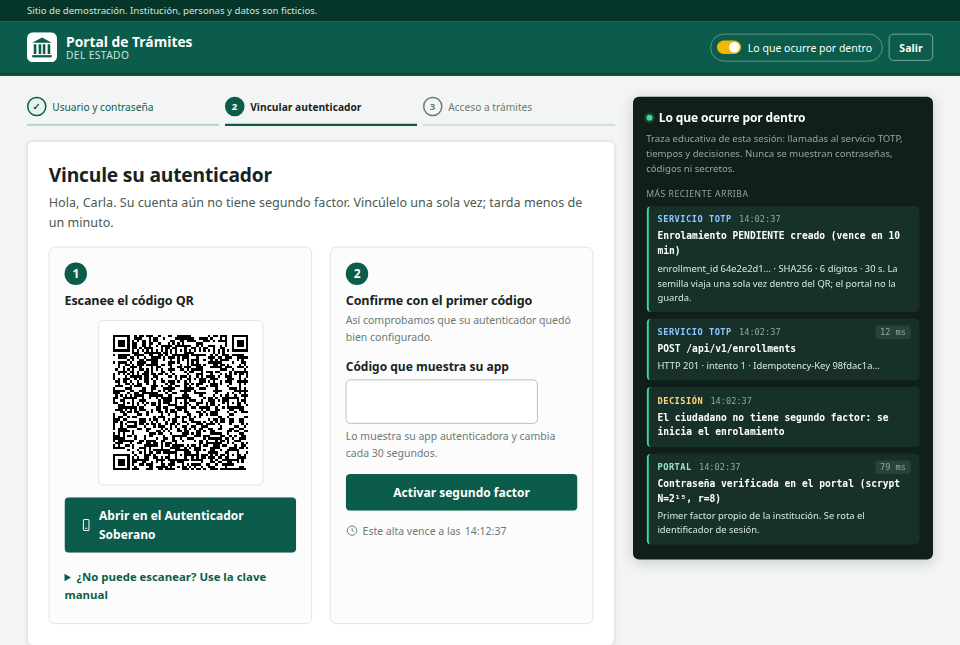
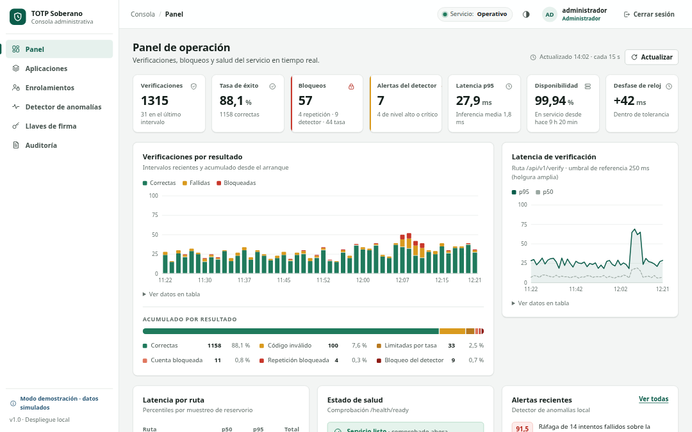

Reto Grupal 1 · Hackatón 2026
Servicio Soberano de Autenticación Multifactorial basado en Tiempo
Segundo factor TOTP propio, auditable y autoejecutable: semillas, validación y registros bajo control institucional.
Juan Laya · arquitectura e integración · backend, criptografía y seguridad · frontend y experiencia de usuario · seguridad y laboratorio de ataques · detector local, documentación y presentación
Equipo PSM-Hackaton
Notas (20 s). Presentar al equipo y el nombre del proyecto. Mensaje de una línea: «Construimos un segundo factor de autenticación que la institución controla de punta a punta, sin depender de nadie de fuera».
El problema
Hoy el segundo factor de muchas instituciones
Semillas ajenas La custodia de las semillas y los respaldos queda en nubes del proveedor.
Validación ajena El ciclo de verificación y los registros salen del control institucional.
Solo SHA-1 Las apps comerciales populares, en la práctica, solo funcionan bien con SHA-1.
Tiendas e Internet La app depende de tiendas que pueden retirarla y de tener conexión.
El reto: un servicio independiente y seguro en infraestructura propia, con semillas y registros cifrados localmente y bajo control nacional e institucional.
Servicio Soberano TOTP · Equipo PSM-Hackaton 2
Notas (40 s). Fuente: enunciado y Términos de Referencia del reto (docs/reto/) y apartado 3 del README. No nombrar marcas comerciales: basta con «autenticadores comerciales y servicios en nubes extranjeras». Remarcar que el reto exige HMAC-SHA256/SHA-512 y almacenamiento cifrado local.
La solución
Un segundo factor TOTP 100 % propio que corre
Algoritmo abierto RFC 6238 / 4226 con HMAC-SHA256 y SHA-512, 6 u 8 dígitos. Nada de cripto inventada.
Implementación Motor, servidor HTTPS, QR, JWT y detector escritos por el equipo. 0 dependencias npm.
Semillas Nacen del CSPRNG del servidor y se guardan cifradas con AES-256-GCM.
App Autenticador PWA servido por la institución en /app/ , funciona sin conexión.
Infraestructura Node.js 22 + SQLite + systemd. Sin nubes, CDN ni telemetría.
Código abierto bajo licencia GNU AGPL-3.0 : cualquier institución puede auditarlo, desplegarlo y mejorarlo.
Fuentes: README (apartados 1, 3 y 5), docs/sbom/README.md (0 dependencias npm, 0 importaciones externas, 0 recursos externos).
Servicio Soberano TOTP · Equipo PSM-Hackaton 3
Notas (40 s). Frase clave: «Lo propio no es el algoritmo, que es un estándar abierto; lo propio es la implementación y la custodia». Si preguntan por criptografía casera: usamos las primitivas de node:crypto y los vectores oficiales del RFC 6238 en las pruebas.
Arquitectura
Un monolito modular, un proceso, una base local
Ciudadano
App autenticadora PWA
semillas cifradas con PIN
(PBKDF2 + AES-GCM)
funciona sin conexión
Sistema institucional
Portal de Trámites · Reto 3
SDK sin dependencias:
JWKS en caché, reintento
idempotente, falla cerrado
código 6–8 díg.
API v1
JWT EdDSA
QR (una vez)
Servicio Soberano TOTP
Node.js 22 · HTTPS TLS 1.3 · 31 rutas (API v1 + consola) · /app/ · /consola/
1. Seguridad de entrada
límites de tasa · esquemas cerrados
2. Bloqueo progresivo
30 s → 2 min → 10 min → 1 h
3. Detector local
Isolation Forest + reglas
4. Motor TOTP RFC 6238
deriva · anti replay atómico
Bóveda AES-256-GCM
llave maestra versionada
5. Tokens Ed25519
JWT 300 s · jti único · JWKS
Bitácora encadenada
SHA-256 de cada evento
verificable desde la consola
Anonimización
usuario e IP solo como
HMAC-SHA256 con pepper
SQLite local (WAL)
semillas cifradas · intentos · bitácora
Administrador
Consola /consola/
contraseña + TOTP
RBAC: Administrador,
Operador, Auditor
políticas · llaves · alertas
Del propio servidor
.env (permisos 600):
llave maestra y peppers
NTP institucional
(chrony)
CA institucional
Servicio Soberano TOTP · Equipo PSM-Hackaton 4
Notas (45 s). Recorrer de izquierda a derecha: el ciudadano genera el código en su app; el sistema institucional (nuestro Portal de Trámites o el Reto 3) llama a la API; dentro del servicio, cada verificación pasa por los pasos 1 a 5 y termina en un JWT firmado. Todo vive en un proceso y un archivo SQLite; la llave maestra está fuera de la base. Fuente: README §3, ARCHITECTURE.md (ADR-001 y ADR-002).
Cómo funciona
Del QR a una sesión firmada, en cuatro pasos
1
Enrolar
semilla CSPRNG
32 / 64 bytes
Se guarda cifrada con
AES-256-GCM y viaja una
sola vez en el QR
(otpauth://, SHA-256/512).
2
Código
482 915
La app calcula, sin red:
HMAC(semilla, ⌊t / 30⌋)
→ 6 u 8 dígitos que
cambian cada 30 s.
3
Verificar
✓ límite de tasa y bloqueo
✓ detector local de riesgo
✓ RFC 6238 con ventana
y compensación de deriva
✓ anti replay atómico:
un código, un solo uso
Error genérico si falla.
4
JWT firmado
EdDSA (Ed25519)
vida de 300 s
aud = la app integradora
jti de un solo uso
El sistema lo comprueba
con la JWKS pública, sin
red, y abre la sesión.
Si el código se pierde o el reloj se desvía: resincronización con dos códigos consecutivos (±10 pasos) y 10 códigos de recuperación guardados con scrypt.
Servicio Soberano TOTP · Equipo PSM-Hackaton 5
Notas (40 s). Explicar como a un ciudadano: «escaneas una vez; desde ahí tu teléfono y el servidor calculan el mismo número a partir de la hora». Paso 4 es lo que recibe el sistema institucional: una constancia firmada que solo vale para esa app y una sola vez. Fuente: README §4 (motor, tokens, API v1).
Soberanía
Ocho pilares de soberanía, demostrables
1 · Código abierto y auditable AGPL-3.0, incluido el motor criptográfico.
2 · Datos en territorio propio Semillas, registros y copias solo en el servidor.
3 · Llaves locales AES-256 y Ed25519 generadas y custodiadas aquí.
4 · Reloj soberano NTP institucional; la consola muestra el desfase.
5 · App distribuida por la institución PWA en /app/, sin tiendas de terceros.
6 · Cero llamadas externas Sin CDN, fuentes web, analítica, SMS ni correo de terceros.
7 · Construcción sin Internet 0 dependencias: no hay nada que descargar.
8 · Sin atadura a un proveedor Formatos abiertos: otpauth://, JWT, JWKS, JSON.
Funciona sin Internet
En la demo desconectamos la red ante el jurado y repetimos el acceso completo.
0
dependencias npm, importaciones externas y recursos externos en los frontends
Servicio Soberano TOTP · Equipo PSM-Hackaton · Fuentes: análisis técnico (8 pilares), docs/sbom/README.md 6
Notas (40 s). «La soberanía no se declara: se demuestra». Mostrar en vivo (guion 0:45–1:30): node docs/sbom/generar-sbom.js y la pestaña Red del navegador sin peticiones externas; luego, en el bloque de caos, desconectar la red. El pilar 7 se actualizó respecto del análisis inicial: ya no hay contenedores (ADR-002), solo cero dependencias.
Seguridad
Estándares del reto, cada uno con su prueba
Exigencia Cómo lo cumplimos Evidencia
Cifrado en reposo AES-256 AES-256-GCM con datos asociados por enrolamiento vault.test.js · rotación de llave Cifrado en tránsito TLS 1.3 como versión mínima, HSTS servidor node:https propio Tokens asimétricos locales JWT Ed25519, 300 s, jti único, JWKS con rotación laboratorio: JWT 13/13 Anti replay Actualización atómica: un código, un solo uso 10 envíos simultáneos → 1 aceptado Fuerza bruta y DDoS Bloqueo 30 s → 2 min → 10 min → 1 h; límites de tasa bloqueo al 6.º intento; inundación sin 5xx OWASP Esquemas cerrados, errores genéricos, cookie segura + CSRF laboratorio: entradas 47/47 Trazabilidad Bitácora encadenada SHA-256 + SBOM CycloneDX alterar o borrar una fila se detecta Anonimización Usuario e IP solo como HMAC-SHA256 con pepper métricas sin IP ni nombres
Servicio Soberano TOTP · Fuentes: matriz de cumplimiento §3, informe del laboratorio (26-11-2026) 7
Notas (40 s). No leer la tabla: elegir dos filas (anti replay y bitácora) y decir «todo esto está probado: 307 pruebas automatizadas en verde (README §4) y el laboratorio de ataques de la siguiente diapositiva». Si preguntan por robo de la base: semillas y claves privadas cifradas con una llave maestra que no está en la base; usuarios e IP solo como HMAC.
Laboratorio de ataques y caos
Atacamos nuestro propio servicio real
Escenario Verificaciones
Replay de código TOTP (incluye carrera concurrente) 6/6 Manipulación de JWT (alg none, HS256, kid, audiencia, jti) 13/13 Entradas malformadas 47/47 Deriva acotada (ráfaga T+1…T+12) 6/6 Fuerza bruta secuencial 7/7 Fuerza bruta distribuida (rotación de IP) 5/5 Spraying: un origen contra muchas cuentas 7/7 Origen compartido: ciudadanos tras el mismo portal 6/6 Inundación concurrente 5/5 Caos de red: latencia, corte y restauración 8/8 Caída y reinicio del backend 6/6
Falla cerrado
0 de 112 códigos incorrectos aprobados durante el caos · 0 errores 5xx · nadie entra en el corte
0,01 s
recuperación tras corte de red
0,33 s
listo tras matar el proceso
Servicio Soberano TOTP · Fuente: docs/evidencias/attack-lab-informe-2026-11-26 (0 hallazgos, 123 s) 8
Notas (50 s). En vivo (guion 3:00–4:30): replay.js, jwt.js y spraying.js. Decir: «robamos un código válido y lo reenviamos: rechazado; diez envíos simultáneos: exactamente uno entra». Para el caos: «800 ms de latencia: el usuario entra, más lento; cortamos la red 10 s: nadie entra; restauramos: se recupera en milisegundos». Los bloqueos persisten tras el reinicio porque viven en la base. El escaneo dinámico propio suma 12/12 verificaciones sobre las 31 rutas.
Inteligencia artificial local
Detector de anomalías propio, dentro del servidor
Isolation Forest programado desde cero + reglas explicables Mira cuentas por IP, IP por cuenta, ritmo y proporción de fallos
Respuesta adaptativa por app: permitir, espera adicional o bloqueo
Sin telemetría: se entrena y decide en esta máquina
23,3 µs
por evaluación · p95 de inferencia < 15 ms en pruebas
36
bloqueos al spraying · 0 cuentas comprometidas
0
ciudadanos legítimos bloqueados tras 48 fallos de otros 24 ciudadanos detrás del mismo portal

Consola en modo demostración (datos simulados): escala de riesgo y razones legibles de cada alerta.
Servicio Soberano TOTP · Fuentes: escalabilidad §B.4 (µs), informe del laboratorio (spraying, origen compartido), matriz §2.2 (p95) 9
Notas (45 s). Explicar «aprendizaje automático local»: el modelo aprende cómo luce el tráfico normal y aísla lo raro; las reglas dicen en castellano por qué («una misma IP probó 20 cuentas distintas en 15 minutos»). El 429 que recibe el atacante es genérico: no revela puntuación ni razones. Métrica de falsos positivos: escenario «origen compartido», ningún ciudadano legítimo quedó bloqueado. En la consola, leer en voz alta una razón (guion 3:00–4:30).
Experiencia de usuario
Tres interfaces propias, claras y sin frameworks
HTML, CSS y JS propios, sin CDN. Los trámites sensibles piden un código extra (step-up ); mensajes claros y cuenta atrás en los bloqueos.

App: SHA-512, 8 dígitos, sin conexión.

Portal (ficticio): alta guiada con QR, enlace directo a la app o clave manual; panel «Lo que ocurre por dentro».

Consola: operación, apps y políticas, enrolamientos (suspender, reactivar, revocar), cuentas, llaves y auditoría con RBAC (datos simulados).
Servicio Soberano TOTP · Capturas propias del 26-11-2026 (app y consola en modo demostración; portal con el servicio de pruebas del SDK) 10
Notas (40 s). Mientras se habla, el compañero de teclado hace el flujo real (guion 1:30–3:00): usuario y contraseña → «Abrir en el Autenticador Soberano» → primer código → códigos de recuperación → código nuevo → panel → cambio de datos bancarios con step-up. Límite honesto: la lectura con cámara en la PWA está limitada por una cabecera del servidor; el alta funciona por enlace, URI pegada o clave manual.
Impacto y viabilidad
Medido en un equipo de escritorio, no supuesto
≈ 350/s
verificaciones de código con una instancia
≈ 275 000
usuarios por servidor (≈ 27 instituciones de 10 000 personas)
×3–×5
con un ajuste de disco medido: ≈ 900 000 usuarios
$0
en licencias: solo hardware propio y software libre
Escalera de crecimiento soberana: cada peldaño se activa por un disparador medible
1 · Un servidor ≈ 275 000 usuarios (medido)
2 · Afinado ≈ 900 000 (medido)
3 · Activo/pasivo relevo ≤ 5 min
4 · Varios nodos PostgreSQL autoalojado
5 · Federación nacional tenencia por institución + HSM
6 · Continuidad en todas las etapas: copias cifradas · RPO/RTO · rotación de llaves sin corte · NTP institucional
Servicio Soberano TOTP · Fuente: docs/escalabilidad/escalabilidad.html (Intel Core i5-12400, TLS 1.3, AES-256 y bitácora activos) 11
Notas (45 s). Supuestos explícitos del documento: 4 inicios por usuario al día, 20 % en la hora pico, ráfagas del doble y servidor al 50 %. También: ≈ 800 validaciones de token/s y ≈ 245 inicios completos/s; 4,0 MB por cada 1 000 usuarios enrolados. El cuello de botella es la escritura a disco, no la criptografía. La capacidad de las etapas 1 y 2 está medida; la de la etapa 4 se calcula tras medir en el hardware destino. Solo infraestructura propia o nacional y software libre.
Cumplimiento
Requisito por requisito, con estado honesto
Criterio de evaluación Peso Estado
1. Buenas prácticas, limpieza y seguridad 15 % Listo 2. Ejecución técnica y funcionalidad 25 % Listo 3. Uso e integración de IA 10 % Listo 4. Impacto y viabilidad 15 % Parcial 5. Innovación y creatividad 10 % Listo 6. Diseño y experiencia de usuario 15 % Parcial 7. Presentación 10 % Listo
32 de 32
requisitos de los Términos y del enunciado: cumple
2
criterios en parcial, con lo pendiente declarado
Lo pendiente: ejecutar el instalador en modo sistema (root) en un servidor institucional real y la sesión de usabilidad con 3 personas ajenas al equipo.
Servicio Soberano TOTP · Fuente: docs/cumplimiento/matriz-cumplimiento.html (26-11-2026) 12
Notas (30 s). Cada fila de la matriz cita textualmente el requisito y señala el archivo de código y la prueba que lo demuestran: invitar al jurado a abrirla. Ser explícitos con lo parcial: preferimos declarar los límites antes de que nos los encuentren.
Hoja de ruta
Qué sigue, en orden
Inmediato
Sesión de usabilidad con 3 personas (protocolo listo)
Instalador en modo sistema (root) en un servidor real
App Android nativa completa sobre la base Kotlin
Piloto institucional
Despliegue con systemd en un servidor de la institución
Afinado de disco medido (×3–×5)
Alta disponibilidad activo/pasivo
Escala nacional
Llave maestra en HSM o TPM institucional
Varios nodos con PostgreSQL autoalojado
Federación multiinstitución con llaves aisladas
En cada etapa se mantienen AES-256 en reposo, TLS 1.3, anonimización HMAC, OWASP y la bitácora encadenada, solo con infraestructura propia o nacional y software libre .
Servicio Soberano TOTP · Fuentes: matriz de cumplimiento §6, escalabilidad §C, README §4 (límites) 13
Notas (30 s). Lo inmediato son tareas pequeñas y ya preparadas (protocolo de usabilidad, instalador probado en modo usuario, base Kotlin con RFC 6238). El piloto valida el punto parcial de impacto: el despliegue en un servidor real. La escala nacional sigue la escalera de la diapositiva 11, siempre con infraestructura propia o nacional.
Llamado a la acción
Pilotémoslo en una institución:
Se instala en un servidor Linux con Node.js 22, sin descargar nada más:
$ cd backend && npm run env && npm run certs && npm run seed && npm start
307
pruebas automatizadas en verde
116/116
verificaciones de ataque
$0
en licencias · AGPL-3.0
Repositorio: servicio-soberano-autenticacion-totp · Producción: deploy/README.md (systemd, CA y NTP institucionales) 14
Notas (30 s). Cerrar con la frase: «Cualquier sistema se integra con nuestro SDK o con cuatro llamadas HTTPS; lo hicimos con el Portal de Trámites y lo ofrecemos al equipo del Reto 3». Fuentes de las cifras: README §4 y §6 (307 pruebas, instalación), informe del laboratorio (116/116), docs/sbom (0 dependencias). Agradecer y abrir preguntas.